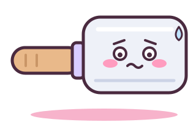
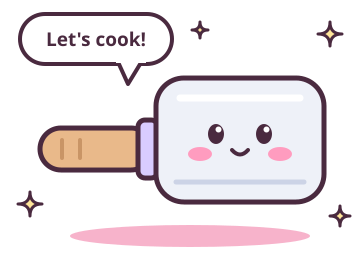
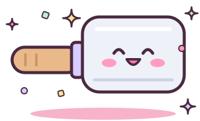
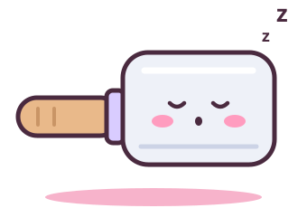

Component gallery
Color
Ink (#4a2a3f) is the only text color on light grounds. Every pastel is a fill, never a text color on light backgrounds.
#ffe1ec
#fffaf3
#4a2a3f
#5e3a52
#ff9cbf
#bdeed8
#ffe69a
#d9ccff
Type
Hero, 800
Section title, 800
Card title, 800
Lede, 500. Usuba is a small AI model made for one job: Omarchy plugins.
Body, 500. Inline code looks like usuba check and sits comfortably in a sentence.
Code, M PLUS 1 Code: $ usuba check ./dropbox-widget
Buttons
Hover lifts slightly; press pushes the button into its shadow. Primary is pink, secondary is mint, highlight (nav CTA) is butter.
Sticker cards
Card title
Cards tilt in a repeating -1.5°, 1°, -0.6° cycle. Tilt is removed on small screens.
Card title
Icon badges rotate through mint, butter, lilac, pink.
Card title
Keep card text short: one or two sentences.
Status: pill and badges
Every piece of Usuba that isn't shipped carries a badge. One status pill per page, in the hero.
The Usuba Checker is available now. Check it out, try it today.Bar chart
- Written by people27
- GPT-5.622
- Small local models3 to 4
Notes give context or mark results preliminary.
Gain stickers, spec chips
- +13Model namemore working plugins
- +15Model nameone-line detail
- Based on Qwen 3.5 9B
- Runs on a typical 32 GB laptop
- No graphics card needed
Code window
$ usuba check ./dropbox-widget
✗ fake-data Shows storage numbers, but Dropbox isn't installed.
fix: detect Dropbox first, and show an empty state without it.
⚠ risky-cmd Deletes ~/.cache/dropbox-widget. Allowed; review it.
1 problem, 1 warningDocs callouts
Tip: run usuba check on a plugin before you share it.

Heads up: callout copy is plain and precise. The mascot carries the mood; the words carry the facts.
Mascot poses
Working name Usu-chan (TBD). Use each pose only for its job. The hero bubble now reads "let's check!"




States
This page wandered off
The link may be old or mistyped. Try the Checker docs, or head back home.
No results yet
We'll publish them here when training finishes, with the test method and model versions.
Try the Checker